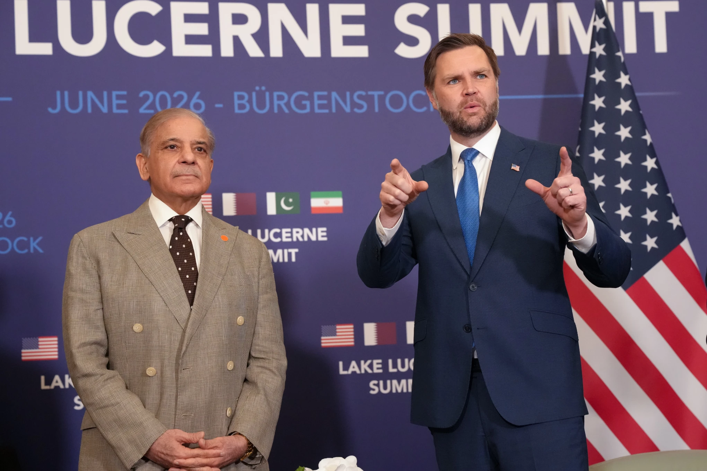

Monday, June 29, 2026
LIVE 7hrs ago
U.S. Vice President JD Vance said Sunday there was an opportunity to “turn over a new leaf” with Iran as the sides held talks aimed at building out the interim deal to end the war in Iran reached by the two sides last week. But even as Vance called on Tehran to build on the moment, President Donald Trump threatened to restart strikes on Iran for its support of Hezbollah militants in Lebanon or if it moved to close the strategic Strait of Hormuz.


OBBUERGEN, Switzerland — Negotiations at the highest level in Switzerland on a permanent solution to the Iran war ended early Monday, with lower-level talks planned throughout the week as Iran and the United States move to establish a “de-confliction cell” to deal with the fighting in Lebanon.
The cell would include the Lebanese government and would “ensure the adherence of the termination of military operations in Lebanon,” according to a statement from mediators Pakistan and Qatar. But it’s uncertain whether it will be enough to prevent bloodshed between the Iranian-backed Hezbollah group and Israel, which occupies Lebanon and believes it must have a free hand to strike extremists launching incursions into northern Israel.
No immediate comment was available from the U.S. Iran praised the work of the mediators.
The meetings kicked off a 60-day diplomatic process aimed at reaching a long-term agreement to stop the Iran war. But conflict in Lebanon is still one of the primary sticking issues.
At the same time, Iran stated it had shut the Strait of Hormuz, the small mouth of the Persian Gulf vital to petroleum shipments, again over the weekend, while the U.S. said trade resumed.
Tense Opening of discussions Negotiations opened tensely as Iran took offense by U.S. President Donald Trump’s threat to attack and his admonition that Iran’s president should control his mouth, during Sunday’s discussions in Switzerland.
“Iran must stop immediately with the PROXIES, which are well paid, in Lebanon from causing trouble,” Trump said on social media. “If they don’t, we will hit Iran very hard again, like last week, but harder!!!”
Comments from abroad — on social media and to news outlets — threw a wrench in efforts by Vice President JD Vance and mediators Pakistan and Qatar to keep Iran involved in talks.
Iran’s chief negotiator, Mohammad Bagher Qalibaf, said on X after Trump’s comments that “they would do well to be careful about what they say.” "Our military forces are prepared to handle them differently. “They can go on talking, it is we who do things.”
But subsequently, Iranian Foreign Minister Abbas Araghchi tweeted on X that “tireless Pakistani and Qatari mediation has delivered major progress to end Lebanon War.” The first "real test" of discussions, he said, would be whether the deconfliction cell was able to stop the fighting in Lebanon.
Iranian state television claimed Vance and U.S. negotiators including Steve Witkoff and Trump’s son-in-law Jared Kushner met for roughly 80 minutes with Qalibaf and Araghchi. One published photo showed Vance at a laptop talking with Qatar’s prime minister with Kushner looking over his shoulder, a coffee machine in the background.
Pakistan and Qatar said lower-level technical talks would go on for the rest of the week in Switzerland after the summit. Such meetings are meant to provide the breakthroughs needed for high-level officials to return and sign agreements.
“Those talks included clarifying what Iran meant by recent statements about the Strait of Hormuz,” said a senior American diplomat involved in the talks, who spoke on condition of anonymity to describe the confidential deliberations. Negotiators also discussed “mechanisms” to ensure the strait remains open and a ceasefire in southern Lebanon is maintained, as well as “robust” talks on the nuclear problem.
Iran intends to initially focus on Israeli bombing in Lebanon Negotiators are racing to nail down technical specifics in a 60-day sprint that carries huge ramifications for the international economy and global security.
“The question we have today is how much more can we do together? Can we turn a new leaf?’ Vance remarked as the negotiations opened, “Can we change relations in the Middle East for good?
Iran’s delegation did not meet a group of Western journalists before the discussions.
The U.S. wants to keep Iran engaged in talks over its nuclear program, despite fears it could be used for military reasons, which Iran rejects. Vance also wants Tehran to promise to maintaining open the Strait of Hormuz, which Iran said Saturday it had closed. The U.S. has denied that, stating shipping traffic went on Sunday.
A restored ceasefire in Lebanon negotiated Saturday appeared to be holding and Israel’s military announced it will eliminate travel restrictions for residents near the border with Lebanon on Monday morning, another hint of quiet.
But neither Israel nor Hezbollah is a party to the U.S.-Iran deal, and Israeli Prime Minister Benjamin Netanyahu has vowed to retain his soldiers in southern Lebanon until any threat to Israel is removed. Hezbollah has said it will not halt bombing unless Israel promises to withdraw.
Iran nuclear program sparks tensions Trump’s deal with Iranian President Masoud Pezeshkian frees Tehran immediately to sell its oil and opens the door to Iran’s access to billions of dollars in blocked assets. A member of Iran’s negotiating team informed state television that draft text was achieved on “temporary sanctions waivers for oil and petroleum derivatives.”
The deal also requires Iran to dilute its stockpile of highly enriched uranium, which is believed to be buried under nuclear sites that were bombed in U.S. strikes a year ago.
But on Sunday, Pezeshkian told Iran’s state media that “we will never back down from the right to enrich uranium, and the other side is also forced to accept it.”
Later, in a telephone interview with Fox News, Mr Trump urged the Iranian president to be careful what he said, and threatened to take over Iran, a Fox journalist reported.
Iran approached the talks warily, mindful of its previous experience with U.S. talks on the nuclear problem, which were twice interrupted by military attacks last year.
Controversy over the deal Trump and Vance have faced fierce criticism from parts of their own party over the deal, with Republican hardliners comparing it unfavorably to the nuclear deal signed by the Obama administration that Trump and Republicans have insisted did nothing to end Iran's nuclear program.
The new pact allows commercial ships to transit the Strait of Hormuz for 60 days without paying a price, but it does not rule out the possibility of Iran charging tolls in the future. On Saturday, Trump issued his own threat to impose U.S. tolls if no deal is reached with Iran within 60 days, stressing that the money would go toward “services rendered as the Guardian Angel to the countries of the Middle East.”
The Trump administration has been trying to convince global markets that the conflict has been only a blip in oil prices as Americans worry about high gasoline prices heading into peak summer travel. Oil futures tumbled roughly 8% following the announcement of the deal.
___